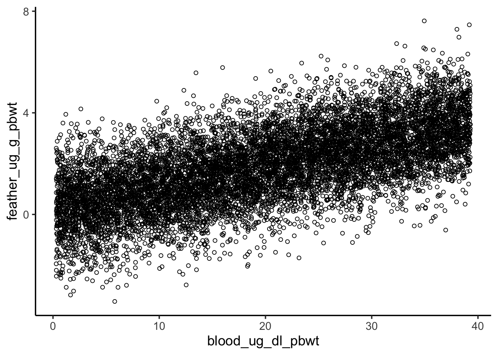

Lead is an important contaminant in urban areas with well-known impacts on human health, but do non-human animals also face risks from lead exposure? Hitt et al. investigated this question by measuring lead levels in soil and the blood of breeding mockingbirds, as well as egg hatching and offspring development (Hitt et al. 2023). We will replicate parts of their analysis here.
Get the data
The data for this study were deposited in the Dryad Data Repository and are available here. Download the full dataset and put them in the appropriate folder of your RStudio project.
Read the northern mockingbird nestling data (“NOMO_Nest_Data.csv”) and nestling lead data (“NestlingPb.csv”) into data frames called nest_data and nestlingpb_data, respectively. Filter both data frames to the Uptown and Lakeshore neighborhoods.
Rows: 214 Columns: 11
── Column specification ────────────────────────────────────────────────────────
Delimiter: ","
chr (5): year, nest, hood, status, lay.month
dbl (6): nest_id, bin.status, clutch, pred.eggs, survive, product
ℹ Use `spec()` to retrieve the full column specification for this data.
ℹ Specify the column types or set `show_col_types = FALSE` to quiet this message.
Rows: 92 Columns: 16
── Column specification ────────────────────────────────────────────────────────
Delimiter: ","
chr (5): age, hood, hood_pb, bloodtube, notes
dbl (11): nomo, nest_id, ug_g_drywt, blood_ng_ml_pbwt, blood_ug_dl_pbwt, blo...
ℹ Use `spec()` to retrieve the full column specification for this data.
ℹ Specify the column types or set `show_col_types = FALSE` to quiet this message.
Hypothesis testing by randomization
Do mockingbirds in a neighborhood with higher lead concentration have less successful nests?
We’ll investigate this question using randomization hypothesis testing.
Nest success
nest_data contains columns hood and bin.status, representing the neighborhood and binary status (at least one chick fledged or not) for each monitored nest. Visualize how nest success (i.e., binary status) varied by neighborhood.
ggplot(nest_data, aes(hood, fill =factor(bin.status))) +geom_bar() +scale_fill_brewer("Nest success", palette ="Dark2")
Step 1: state the null and alternative hypotheses
H0: Neighborhood does not have an effect on nest success
HA: Neighborhood has an effect on nest success
Step 2: calculate the point statistic
1) What is the relevant sample statistic for our hypothesis?
We’re using a threshold of\(\alpha=0.05\). A p-value of 0.466 is greater than our threshold, so we fail to reject the null.
This DOES NOT mean we accept the null. We DO NOT claim neighborhood does not have an effect on nest success. Rather, we say we could not detect an effect, if one exists.
Nestling blood lead levels
Now it’s your turn. Perform a similar analysis to investigate whether nestling blood Pb levels vary by neighborhood. Use nestlingpb_data for this part, column blood_ug_dl_pbwt.
First, visualize the blood Pb levels by neighborhood. What’s an appropriate type of visualization for this?
We’re using a threshold of\(\alpha=0.05\). A p-value of 0 is less than our threshold, so we reject the null. We find neighborhood does have an effect on nestling blood Pb levels.
Hypothesis testing by normal approximation
Rather than using randomization to simulate the null distribution, it’s often easier to approximate it as a normal distribution.
Does nestling blood Pb level have a relationship with feather Pb level?
First, visualize the relationship between the two variables.
ggplot(nestlingpb_data, aes(blood_ug_dl_pbwt, feather_ug_g_pbwt)) +geom_point() +geom_smooth(method ="lm", se =FALSE, linewidth =1.5)
`geom_smooth()` using formula = 'y ~ x'
Warning: Removed 45 rows containing non-finite outside the scale range
(`stat_smooth()`).
Warning: Removed 45 rows containing missing values or values outside the scale range
(`geom_point()`).
Step 1: state the null and alternative hypotheses
H0: Blood Pb level does not have an effect onfeather Pb level
HA: Blood Pb level has an effect onfeather Pb level
Step 2: calculate the point statistic
1) What is the relevant sample statistic for our hypothesis?
Step 4: calculate probability of the point estimate under the null
What’s the p-value? Use pnorm() to get the probability of a point estimate at least as extreme as the observed.
pval <-2*pnorm(-abs(beta1_estimate), mean =0, sd = beta1_se)pval
[1] 1.677745e-13
Note
Our calculate p-value is much lower than the p-value from the summary of our linear model. In class I told you lm() uses a Student’s t-distribution instead of a normal distribution for calculating the p-value. When sample sizes are large, the normal distribution and t-distribution are virtually identical. With only 22 complete data points, our sample size is relatively small. Therefore the t-distribution has thicker tails and yields a larger p-value. Hence the discrepancy.
Step 5: reject or fail to reject the null
Our p-value is much less than 0.05, so we reject the null and interpret our model to say blood Pb levels have an effect on feather Pb levels.
Sensitivity to outliers
Revisit the visualization of the blood and feather Pb levels. One point seems to be an extreme outlier, and it seems to be exerting a strong influence on our model. Repeat the previous analysis with that point removed, then answer the question below.
pval <-2*pnorm(-abs(beta1_estimate), mean =0, sd = beta1_se)pval
[1] 0.003341459
Question: Of the two analyses (with and without the outlier), which had a lower p-value? Does that make it a better analysis?
There is no objectively correct answer to this question. Removing the outlier increased our p-value. If the outlier is not representative of our system for some reason (e.g., it’s the result of a lab error), then removing it and getting a higher p-value is a more appropriate way to interpret the data. However, the outlier may represent a real potential outcome in our system. If that’s the case, we should keep it and perhaps consider an alternative to OLS that’s less sensitive to the allure of outliers.
Confidence intervals
For the last part of today’s lab we will construct confidence intervals around the point estimate of the blood Pb level coefficient. Here’s the plan:
Simulate a population of nestlings, with the same relationship between blood and feather Pb levels as the observed sample.
Draw a new sample of nestlings from the simulated population. Create a confidence interval for the point estimate of the blood Pb level coefficient in this sample.
Repeat the process 100 times.
~95% of our 95% CIs should contain the population parameter.
1. Simulate the population
# Simulate the population# Extract our estimates for beta0, beta1, and sigma (i.e., the SD of the data# around the mean response)beta0_estimate <-summary(blood_feathers_lm2)$coefficients[1,1]beta1_estimate <-summary(blood_feathers_lm2)$coefficients[2,1]sigma <-summary(blood_feathers_lm2)$sigmablood_feather_pop <-tibble(# Predictor (uniformly distributed)blood_ug_dl_pbwt =runif(1e4, min(no_outlier$blood_ug_dl_pbwt),max(no_outlier$blood_ug_dl_pbwt)),# Mean responsemean_feather_ug_g_pbwt = beta0_estimate + beta1_estimate * blood_ug_dl_pbwt,# Simulated response (mean and standard deviation accounted for)feather_ug_g_pbwt =rnorm(1e4, mean = mean_feather_ug_g_pbwt, sd = sigma))# Visualizeggplot(blood_feather_pop, aes(blood_ug_dl_pbwt, feather_ug_g_pbwt)) +geom_point(shape =21)

# Verify the simulated population's coefficients match the inputsc(beta0_estimate, beta1_estimate)
Call:
lm(formula = feather_ug_g_pbwt ~ blood_ug_dl_pbwt, data = blood_feather_pop)
Residuals:
Min 1Q Median 3Q Max
-4.0978 -0.7767 -0.0063 0.7730 4.3946
Coefficients:
Estimate Std. Error t value Pr(>|t|)
(Intercept) 0.162835 0.023506 6.927 4.55e-12 ***
blood_ug_dl_pbwt 0.087599 0.001032 84.843 < 2e-16 ***
---
Signif. codes: 0 '***' 0.001 '**' 0.01 '*' 0.05 '.' 0.1 ' ' 1
Residual standard error: 1.158 on 9998 degrees of freedom
Multiple R-squared: 0.4186, Adjusted R-squared: 0.4185
F-statistic: 7198 on 1 and 9998 DF, p-value: < 2.2e-16
2. Create one confidence interval
# Draw a sampleblood_feather_sample <-sample_n(blood_feather_pop, 21)# Calculate the point estimate and standard errorsample_lm <-lm(feather_ug_g_pbwt ~ blood_ug_dl_pbwt, blood_feather_sample)pe <-summary(sample_lm)$coefficients[2, 1]se <-summary(sample_lm)$coefficients[2, 2]# Construct the confidence intervalsample_ci <-c(point_estimate = pe,ci95_lower = pe -1.96* se,ci95_upper = pe +1.96* se)sample_ci
Randomization allows us to simulate the null distribution, which we can use to quantify the probability of our result if the null hypothesis is true.
sample() and replicate() are helpful here!
Randomization doesn’t make assumptions about the normality of the sample statistic, but it does assume the sample is representative of the population.
By assuming the sample statistic is normally distributed, we can use standard errors to conduct hypothesis testing.
R will calculate standard errors for us for most sample statistics, such as regression coefficients.
We can also use standard errors to construct confidence intervals.
By simulating a population, we demonstrated ~95% of 95% CIs will contain the population parameter.
References
Hitt, Lauren G., Sarah Khalil, Annelise Blanchette, Myra E. Finkelstein, Erik N. K. Iverson, Stephanie C. McClelland, Renata Durães Ribeiro, and Jordan Karubian. 2023. “Lead Exposure Is Correlated with Reduced Nesting Success of an Urban Songbird.”Environmental Research 227 (June): 115711. https://doi.org/10.1016/j.envres.2023.115711.
Source Code
---title: "EDS222 Week 8 Lab: Hypothesis testing"format: html: echo: true eval: true code-tools: truebibliography: references.bib---```{r}#| label: setup#| include: falselibrary(tidyverse)theme_set(theme_classic(14))```# To lead poison a mockingbird## BackgroundLead is an important contaminant in urban areas with well-known impacts on human health, but do non-human animals also face risks from lead exposure? Hitt *et al.* investigated this question by measuring lead levels in soil and the blood of breeding mockingbirds, as well as egg hatching and offspring development [@hitt2023]. We will replicate parts of their analysis here.## Get the dataThe data for this study were deposited in the Dryad Data Repository and are available [here](https://datadryad.org/stash/dataset/doi:10.5061/dryad.tht76hf3v). Download the full dataset and put them in the appropriate folder of your RStudio project.Read the northern mockingbird nestling data ("NOMO_Nest_Data.csv") and nestling lead data ("NestlingPb.csv") into data frames called `nest_data` and `nestlingpb_data`, respectively. Filter both data frames to the Uptown and Lakeshore neighborhoods.```{r}#| label: load-datanest_data <-read_csv("data/NOMO_Nest_Data.csv") %>%filter(hood %in%c("up", "ls"))nestlingpb_data <-read_csv("data/NestlingPb.csv") %>%filter(hood %in%c("uptown", "lakeshore"))```## Hypothesis testing by randomization*Do mockingbirds in a neighborhood with higher lead concentration have less successful nests?*We'll investigate this question using randomization hypothesis testing.### Nest success`nest_data` contains columns `hood` and `bin.status`, representing the neighborhood and *binary status* (at least one chick fledged or not) for each monitored nest. Visualize how nest success (i.e., binary status) varied by neighborhood.```{r}#| label: visualize-successggplot(nest_data, aes(hood, fill =factor(bin.status))) +geom_bar() +scale_fill_brewer("Nest success", palette ="Dark2")```#### Step 1: state the null and alternative hypotheses*H~0~: Neighborhood does not have an effect on nest success\H~A~: Neighborhood has an effect on nest success*#### Step 2: calculate the point statistic1\) What is the relevant sample statistic for our hypothesis?*Difference in proportions*2\) How would you calculate it?```{r}#| label: point-estimate-successnest_success <- nest_data %>%group_by(hood) %>%summarize(prop =sum(bin.status) /n())point_estimate_success <- nest_success$prop[2] - nest_success$prop[1]point_estimate_success```#### Step 3: quantify the uncertaintyUse randomization to simulate the distribution of the sample statistic under the null hypothesis.```{r}#| label: randomization-successnull_dist <-replicate(1000, { nest_success <- nest_data %>%mutate(hood =sample(hood, n())) %>%group_by(hood) %>%summarize(prop =sum(bin.status) /n()) point_estimate_success <- nest_success$prop[2] - nest_success$prop[1] point_estimate_success})ggplot(tibble(null_dist), aes(null_dist)) +geom_histogram(bins =20, color ="cornflowerblue", fill =NA) +geom_vline(xintercept = point_estimate_success, color ="firebrick")```#### Step 4: calculate probability of the point estimate under the nullWhat's the p-value?```{r}#| label: pval-successsum(abs(null_dist) >abs(point_estimate_success)) /length(null_dist)```#### Step 5: reject or fail to reject the null*We're using a threshold of* $\alpha=0.05$. *A p-value of 0.466 is greater than our threshold, so we fail to reject the null.**This DOES NOT mean we accept the null. We DO NOT claim neighborhood does not have an effect on nest success. Rather, we say we could not detect an effect, if one exists.*### Nestling blood lead levelsNow it's your turn. Perform a similar analysis to investigate whether nestling blood Pb levels vary by neighborhood. Use `nestlingpb_data` for this part, column `blood_ug_dl_pbwt`.First, visualize the blood Pb levels by neighborhood. What's an appropriate type of visualization for this?```{r}#| label: visualize-bloodpbggplot(nestlingpb_data, aes(hood, blood_ug_dl_pbwt)) +geom_boxplot() +labs(y ="Blood Pb (ug dl^-1)")```#### Step 1: state the null and alternative hypotheses*H~0~: Neighborhood does not have an effect on nestling Pb levels\H~A~: Neighborhood has an effect on nestling Pb levels*#### Step 2: calculate the point statistic1\) What is the relevant sample statistic for our hypothesis?*Difference in means*2\) How would you calculate it?```{r}#| label: point-estimate-bloodpbbloodpb <- nestlingpb_data %>%group_by(hood) %>%summarize(mean =mean(blood_ug_dl_pbwt))point_estimate_bloodpb <- bloodpb$mean[2] - bloodpb$mean[1]point_estimate_bloodpb```#### Step 3: quantify the uncertaintyUse randomization to simulate the distribution of the sample statistic under the null hypothesis.```{r}#| label: randomization-bloodpbnull_dist <-replicate(1000, { bloodpb <- nestlingpb_data %>%mutate(hood =sample(hood, n())) %>%group_by(hood) %>%summarize(mean =mean(blood_ug_dl_pbwt)) point_estimate_bloodpb <- bloodpb$mean[2] - bloodpb$mean[1] point_estimate_bloodpb})ggplot(tibble(null_dist), aes(null_dist)) +geom_histogram(bins =20, color ="cornflowerblue", fill =NA) +geom_vline(xintercept = point_estimate_bloodpb, color ="firebrick")```#### Step 4: calculate probability of the point estimate under the nullWhat's the p-value?```{r}#| label: pval-bloodpbsum(abs(null_dist) >abs(point_estimate_bloodpb)) /length(null_dist)```#### Step 5: reject or fail to reject the null*We're using a threshold of* $\alpha=0.05$. *A p-value of 0 is less than our threshold, so we reject the null. We find neighborhood **does** have an effect on nestling blood Pb levels.*## Hypothesis testing by normal approximationRather than using randomization to simulate the null distribution, it's often easier to approximate it as a normal distribution.Does nestling blood Pb level have a relationship with feather Pb level?First, visualize the relationship between the two variables.```{r}#| label: blood-feathers-visualizationggplot(nestlingpb_data, aes(blood_ug_dl_pbwt, feather_ug_g_pbwt)) +geom_point() +geom_smooth(method ="lm", se =FALSE, linewidth =1.5)```#### Step 1: state the null and alternative hypotheses*H~0~: Blood Pb level does not have an effect on* *feather Pb level\H~A~: Blood Pb level has an effect on* *feather Pb level*#### Step 2: calculate the point statistic1\) What is the relevant sample statistic for our hypothesis?*Regression coefficient*2\) How would you calculate it?```{r}#| label: blood-feathers-lmblood_feathers_lm <-lm(feather_ug_g_pbwt ~ blood_ug_dl_pbwt, nestlingpb_data)summary(blood_feathers_lm)```#### Step 3: quantify the uncertaintyUse the standard error of the regression coefficient to visualize the distribution of the sample statistic under the null hypothesis.```{r}#| label: blood-feathers-nullbeta1_estimate <-summary(blood_feathers_lm)$coefficients[2, 1]beta1_se <-summary(blood_feathers_lm)$coefficients[2, 2]tibble(beta1 =seq(-(beta1_estimate + beta1_se), beta1_estimate + beta1_se,length.out =200),density =dnorm(beta1, mean =0, sd = beta1_se)) %>%ggplot(aes(beta1, density)) +geom_line(color ="cornflowerblue") +geom_vline(xintercept = beta1_estimate, color ="firebrick")```#### Step 4: calculate probability of the point estimate under the nullWhat's the p-value? Use `pnorm()` to get the probability of a point estimate at least as extreme as the observed.```{r}#| label: blood-feathers-pvalpval <-2*pnorm(-abs(beta1_estimate), mean =0, sd = beta1_se)pval```::: callout-noteOur calculate p-value is much lower than the p-value from the summary of our linear model. In class I told you `lm()` uses a *Student's t-distribution* instead of a normal distribution for calculating the p-value. When sample sizes are large, the normal distribution and t-distribution are virtually identical. With only 22 complete data points, our sample size is relatively small. Therefore the t-distribution has *thicker tails* and yields a larger p-value. Hence the discrepancy.:::#### Step 5: reject or fail to reject the null*Our p-value is much less than 0.05, so we reject the null and interpret our model to say blood Pb levels have an effect on feather Pb levels.*### Sensitivity to outliersRevisit the visualization of the blood and feather Pb levels. One point seems to be an extreme outlier, and it seems to be exerting a strong influence on our model. Repeat the previous analysis with that point removed, then answer the question below.```{r}#| label: remove-outlierno_outlier <- nestlingpb_data %>%filter(blood_ug_dl_pbwt <40)ggplot(no_outlier, aes(blood_ug_dl_pbwt, feather_ug_g_pbwt)) +geom_point() +geom_smooth(method ="lm", se =FALSE, linewidth =1.5)blood_feathers_lm2 <-lm(feather_ug_g_pbwt ~ blood_ug_dl_pbwt, no_outlier)summary(blood_feathers_lm2)beta1_estimate <-summary(blood_feathers_lm2)$coefficients[2, 1]beta1_se <-summary(blood_feathers_lm2)$coefficients[2, 2]tibble(beta1 =seq(-(beta1_estimate + beta1_se), beta1_estimate + beta1_se,length.out =200),density =dnorm(beta1, mean =0, sd = beta1_se)) %>%ggplot(aes(beta1, density)) +geom_line(color ="cornflowerblue") +geom_vline(xintercept = beta1_estimate, color ="firebrick")pval <-2*pnorm(-abs(beta1_estimate), mean =0, sd = beta1_se)pval```**Question:** Of the two analyses (with and without the outlier), which had a lower p-value? Does that make it a better analysis?*There is no objectively correct answer to this question. Removing the outlier increased our p-value. If the outlier is not representative of our system for some reason (e.g., it's the result of a lab error), then removing it and getting a higher p-value is a more appropriate way to interpret the data. However, the outlier may represent a real potential outcome in our system. If that's the case, we should keep it and perhaps consider an alternative to OLS that's less sensitive to the allure of outliers.*## Confidence intervalsFor the last part of today's lab we will construct confidence intervals around the point estimate of the blood Pb level coefficient. Here's the plan:1. Simulate a population of nestlings, with the same relationship between blood and feather Pb levels as the observed sample.2. Draw a new sample of nestlings from the simulated population. Create a confidence interval for the point estimate of the blood Pb level coefficient in this sample.3. Repeat the process 100 times.\~95% of our 95% CIs should contain the population parameter.### 1. Simulate the population```{r}#| label: blood-feather-pop# Simulate the population# Extract our estimates for beta0, beta1, and sigma (i.e., the SD of the data# around the mean response)beta0_estimate <-summary(blood_feathers_lm2)$coefficients[1,1]beta1_estimate <-summary(blood_feathers_lm2)$coefficients[2,1]sigma <-summary(blood_feathers_lm2)$sigmablood_feather_pop <-tibble(# Predictor (uniformly distributed)blood_ug_dl_pbwt =runif(1e4, min(no_outlier$blood_ug_dl_pbwt),max(no_outlier$blood_ug_dl_pbwt)),# Mean responsemean_feather_ug_g_pbwt = beta0_estimate + beta1_estimate * blood_ug_dl_pbwt,# Simulated response (mean and standard deviation accounted for)feather_ug_g_pbwt =rnorm(1e4, mean = mean_feather_ug_g_pbwt, sd = sigma))# Visualizeggplot(blood_feather_pop, aes(blood_ug_dl_pbwt, feather_ug_g_pbwt)) +geom_point(shape =21)# Verify the simulated population's coefficients match the inputsc(beta0_estimate, beta1_estimate)summary(lm(feather_ug_g_pbwt ~ blood_ug_dl_pbwt, blood_feather_pop))```### 2. Create one confidence interval```{r}#| label: blood-feather-ci# Draw a sampleblood_feather_sample <-sample_n(blood_feather_pop, 21)# Calculate the point estimate and standard errorsample_lm <-lm(feather_ug_g_pbwt ~ blood_ug_dl_pbwt, blood_feather_sample)pe <-summary(sample_lm)$coefficients[2, 1]se <-summary(sample_lm)$coefficients[2, 2]# Construct the confidence intervalsample_ci <-c(point_estimate = pe,ci95_lower = pe -1.96* se,ci95_upper = pe +1.96* se)sample_ci```### 3. Repeat the processHow many 95% CIs contain the population parameter?```{r}#| label: repeat-cirepeat_ci <-replicate(100, { blood_feather_sample <-sample_n(blood_feather_pop, 21) sample_lm <-lm(feather_ug_g_pbwt ~ blood_ug_dl_pbwt, blood_feather_sample) pe <-summary(sample_lm)$coefficients[2, 1] se <-summary(sample_lm)$coefficients[2, 2] sample_ci <-c(point_estimate = pe,ci95_lower = pe -1.96* se,ci95_upper = pe +1.96* se) sample_ci})tibble(point_estimate = repeat_ci[1, ],ci95_lower = repeat_ci[2, ],ci95_upper = repeat_ci[3, ],ci =1:100) %>%mutate(valid = beta1_estimate >= ci95_lower & beta1_estimate <= ci95_upper) %>%ggplot() +geom_pointrange(aes(x = point_estimate, xmin = ci95_lower,xmax = ci95_upper,y = ci,color = valid)) +geom_vline(xintercept = beta1_estimate, color ="firebrick")```## Recap- Randomization allows us to simulate the null distribution, which we can use to quantify the probability of our result if the null hypothesis is true. - `sample()` and `replicate()` are helpful here! - Randomization doesn't make assumptions about the normality of the sample statistic, but it does assume the sample is representative of the population.- By assuming the sample statistic is normally distributed, we can use standard errors to conduct hypothesis testing. - R will calculate standard errors for us for most sample statistics, such as regression coefficients.- We can also use standard errors to construct confidence intervals. - By simulating a population, we demonstrated \~95% of 95% CIs will contain the population parameter.